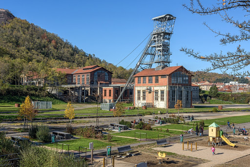
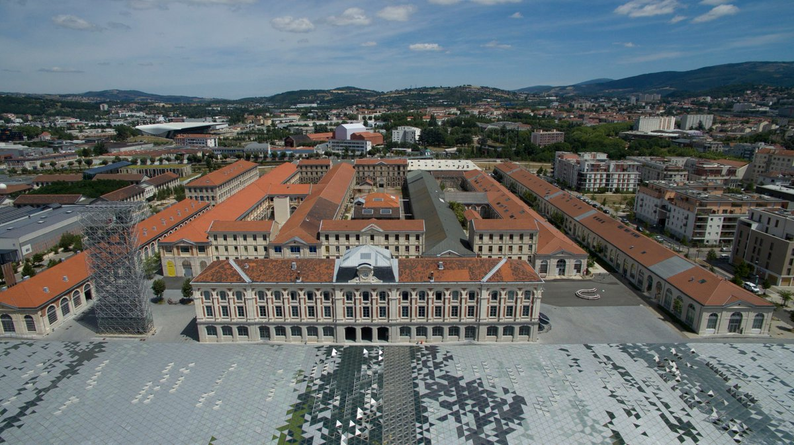
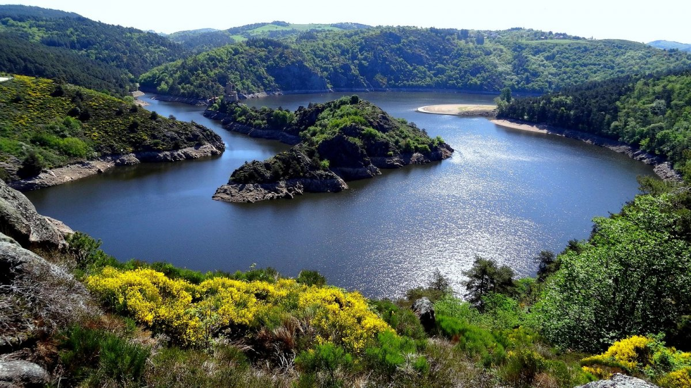

Saint-Étienne is located in the Loire department (Auvergne-Rhône-Alpes region) in southern half of France. It is only 65kms away from its bigger sister, Lyon. Getting to Saint-Étienne is easy thanks to its TGV station (high speed train) and Lyon airport which is less than an hour away from Saint-Etienne city center.
 The Puits Couriot park (old coal mine)
Saint-Étienne used to be one of the main industrial pole in France (with coal mining and the weapon industry, in particular) during the second half of the 19th century and the first half of the 20th century. The huge architectural heritage from that era can be experienced everywhere in the city, in particular at the old "manufacture d'armes" where a big portion of SMC-22 will take place.
 The old weapon factory (Manufacture d'armes)
A large part of Saint-Étienne economy is now oriented towards design (hence the theme of SMC-22). This activity is highlighted every other year during the international Bieannale du Design. Saint-Étienne has been part of the UNESCO Creative Cities Network (UCCN) since 2010.
 The Loire canyon only 15 minutes away from the city center.
Another characteristic of Saint-Etienne is its proximity to nature making it a fantastic place for biking, hiking, etc. With a maximum elevation of 1117m (3665ft), it is the highest city of more than 150k inhabitants in Europe. We plan to organize "expeditions" after the conference so that you can discover the area :).